# VUE 源码
# 探讨内容
- Vue架构概览
- 双向数据绑定&SetState原理
- Vue2 Virtual-dom
- Vue2 DOM Diff算法解析
- Vue2整体解析流程
- Vue运行时优化
- 再见Vue~前端技术框架选型
# 源码结构
源码下载地址 源码地址 (opens new window)
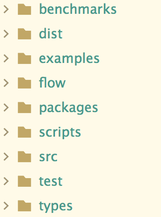
首先，第一层目录
1.benchmarks 跑分。测试性能测试
2.dist 打包出的代码。
3.examples 例子。
4.flow 类型规范。一个框架
5.packages 用lerna框架做出来，多包管理工具。 eg:vue SSR->vue-server-renderer->js->VM node
6.scripts 打包脚本。
7.src 逻辑代码，核心代码。
8.test 测试。
9.types flow定义的ts。
在看核心代码前，先分析一下dist中为什么打包出来很多不一样的vue。
- Runtime only (vue运行时)
- Runtime+compiler (在线编译) 通过js编译成with(),with转成js render()
- 还有不同规范
src 核心代码结构
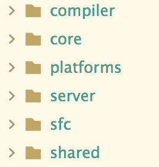
1./compiler 目录，模板编译打包的过程；(离线编译) vue->js。eg：{i} //浏览器不认识，所以要把组件编译成js https://vue-template-explorer.netlify.app/
2./core ⽬录是 Vue.js 的核⼼(也是后面的重点)；
3./platforms ⽬录是针对核⼼模块的 ‘平台’ 模块，
4.platforms 目录下有 web、 weex ⽬录。 web 目录下有对应的 /compiler、 /runtime、 /server、 /util目录；（这里的compiler是在线编译，外面的compiler是离线编译）
5./server 目录是处理服务端渲染；
6./sfc 目录处理单⽂件 .vue；
7./shared 目录提供全局用到的工具
结论：Vue.js 的组成是由 core + 对应的 ‘平台’ 补充代码构成（独立构建和运行时构建 只是 platforms 下 web 平台的两种选择）。 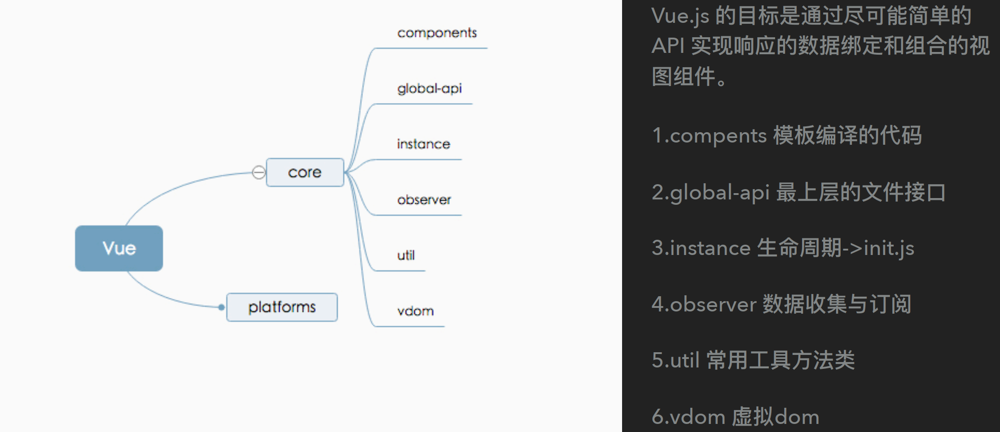
# 双向数据绑定
双向绑定（响应式原理）所涉及到的技术
- 1.Object.defineProperty
- 2.Observer
- 3.Watcher
- 4.Dep
- 5.Directive 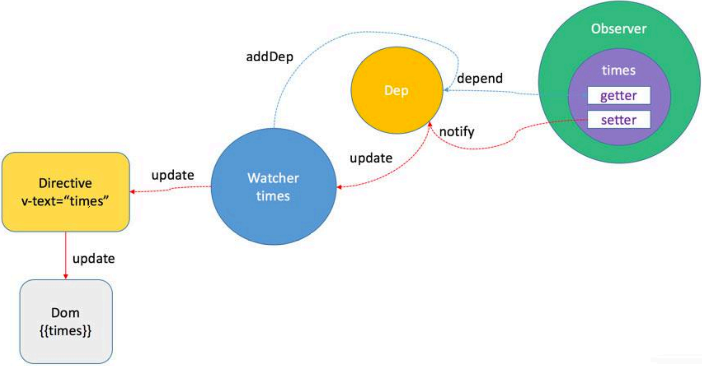
# 1.Object.defineProperty
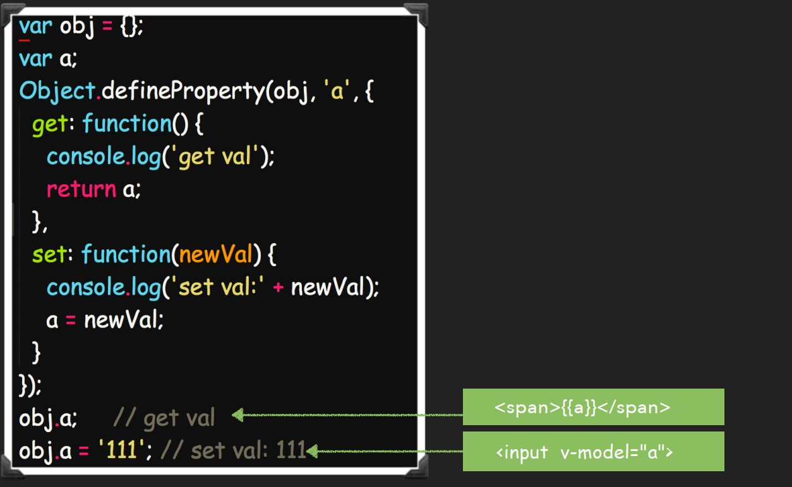 总结
<span>{{a}}</span> -> getter -> watcher -> dep(并且返回数据渲染){a:watcher}
-> setter ->dep -> {a:watcher} -> <span>{{a}}</span>
2
3
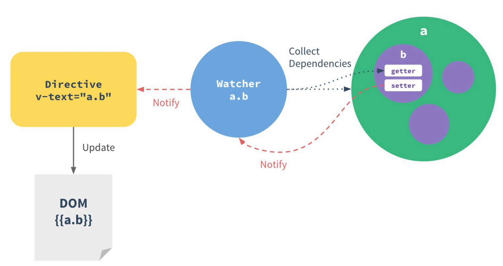 setter 触发消息到 Watcher watcher帮忙告诉 Directive 更新 DOM，DOM中修改了数据也会通知Watcher，watcher帮忙修改数据。
# 2.Observer
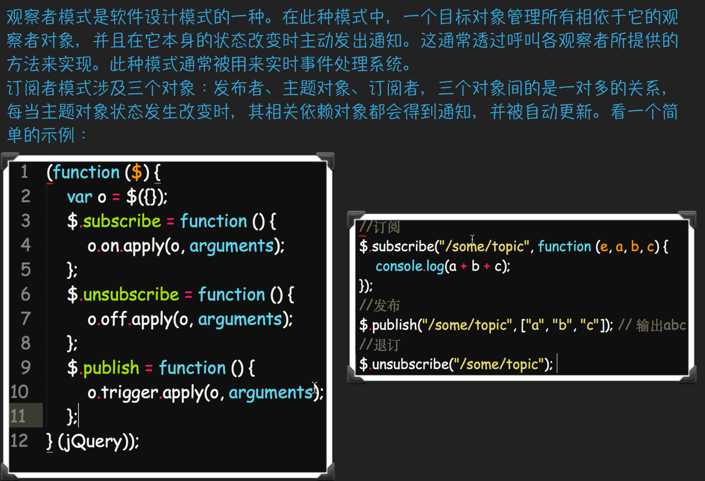 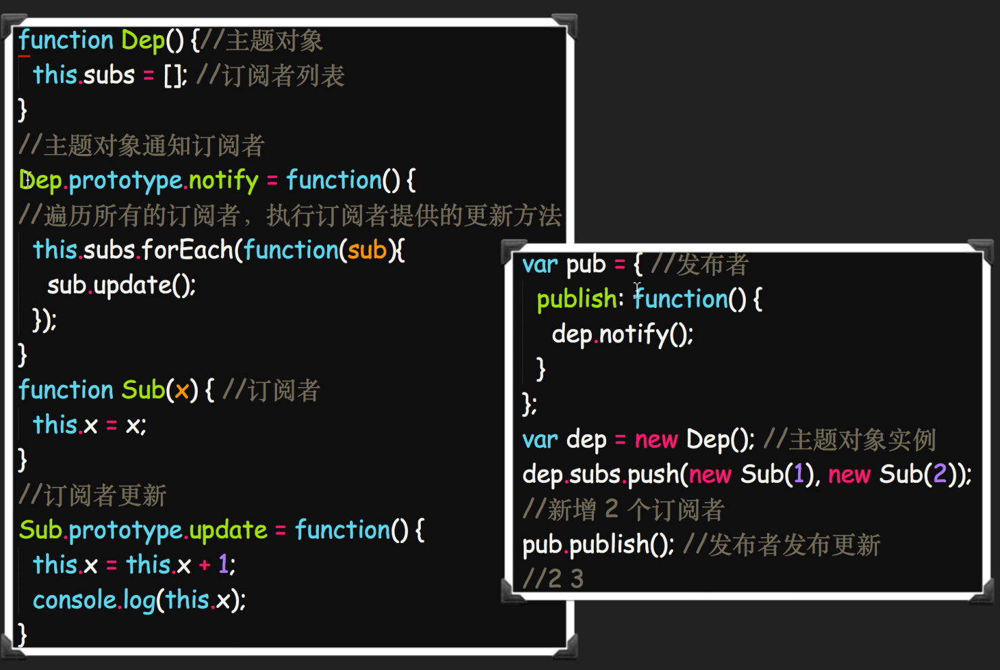 src/core/observer/index.js ,src/core/observer/array.js
Observer主要处理过程：
Observer会观察两种类型的数据，Object 与 Array
对于Array类型的数据，由于 JavaScript 的限制， Vue 不能检测变化,会先重写操作数组 的原型方法，重写后能达到两个目的，
1.当数组发生变化时，触发 notify
如果是 push，unshift，splice 这些添加新元素的操作，则会使用observer观察新添加的 数据
重写完原型方法后，遍历拿到数组中的每个数据 使用observer观察它
2.而对于Object类型的数据，则遍历它的每个key，使用 defineProperty 设置 getter 和 setter，当触发getter的时候，observer则开始收集依赖，而触发setter的时候，observe 则触发notify。 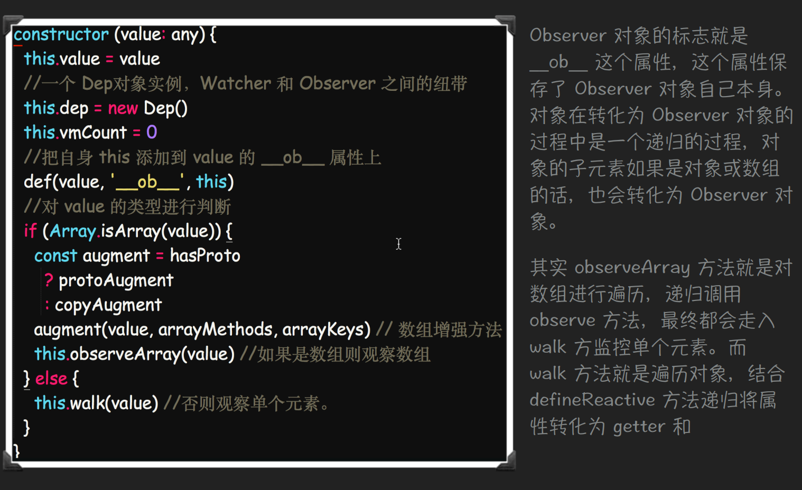 总结observer
observer(data) -> 是否是数组
是->重写数组
1.arr=[]._proto_=ArrayMethed{}
ArrayMethed->继承了->数组方法（拦截 def）
否->this.walk->object.key({})->遍历所有的key(object.defineProperty)
object.defineProperty(
get://把对应的依赖收集到电话本Dep.push()
set://分发，触发所有依赖 遍历Dep电话本
)
2
3
4
5
6
7
8
9
# 3.Watcher
src/core/observer/watcher.js
Watcher 是将模板和 Observer 对象结合在一起的纽带。Watcher 是订阅者模式中的订阅者。Watcher 的两 个参数： expOrFn 最终会被转换为 getter 函数， cb 是更新时执行的回调。依赖收集的入口就是get函数。 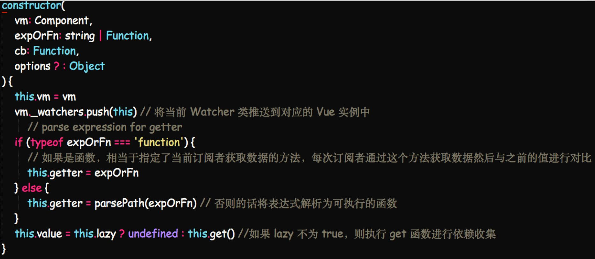 getter 函数是用来连接监控属性与 Watcher 的关键。 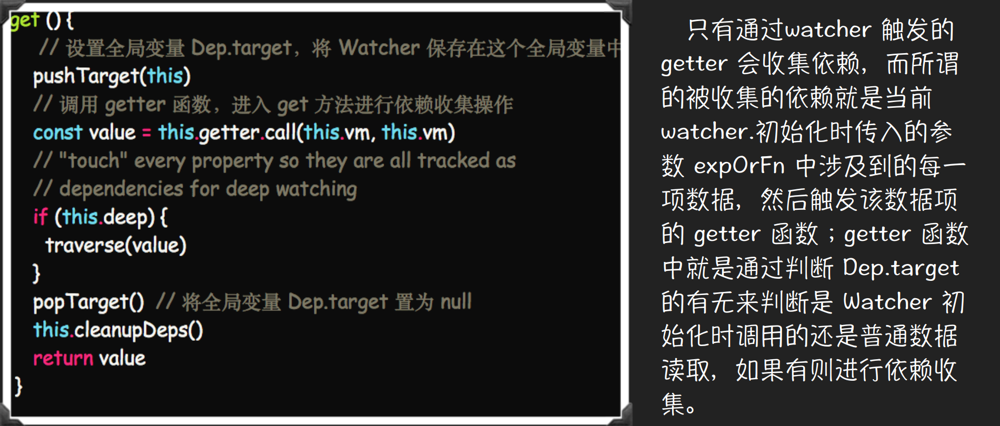
# 4.Dep
src/core/observer/dep.js 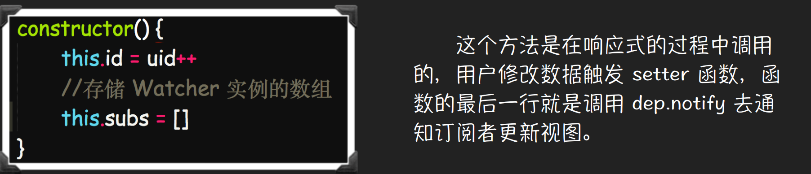
# 5.Directive
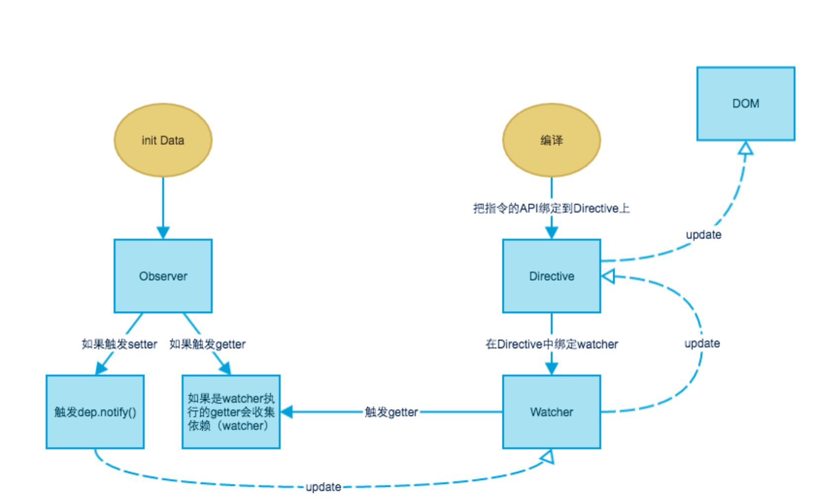 vue内置了这么多的指令，这些指令都会抛出两个接口bind 和 update，这两个接口的作用是，编译的最后一步是执行所有用到的指令的bind方 法，而 update 方法则是当watcher 触发 update 时，Directive会触发指令的update方法
observe -> 触发setter ->
watcher -> 触发update ->
Directive -> 触发update ->
指令
# 实践
手写实现数据双向绑定，代码地址 (opens new window)
其他的一些代码解析
1.vue.use的实现 src/core/global-api/use.js 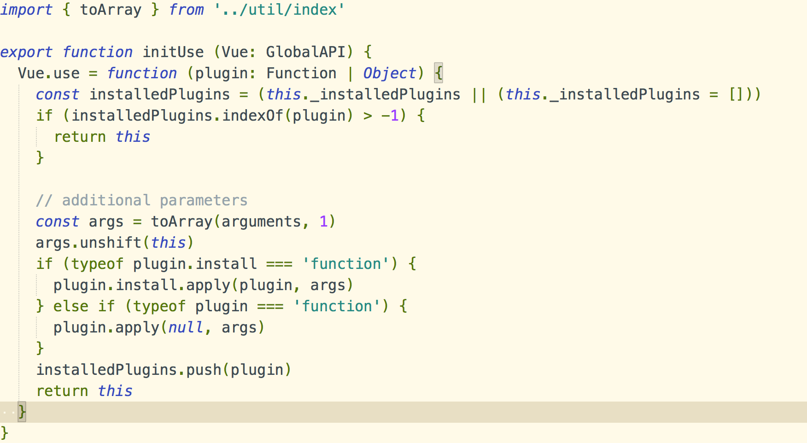
# Vue SetState
总结
1.Batch Update
2.Transaction对一个函数进行包装，让React有机会在一个函数执行前和执行后运行特定的逻辑，从 而完成对整个Batch Update流程的控制。
简单的说就是在要执行的函数中用事务包裹起来，在函数执行前加入initialize阶段，函数执行，最后 执行close阶段。那么Batch Update中
在事件initialize阶段，一个update queue被创建。在事件中调用setState方法时，状态不会被立即调 用，而是被push进Update queue中。
函数执行结束调用事件的close阶段，Update queue会被flush，这事新的状态才会被应用到组件上并开 始后续的Virtual DOM更新，biff算法来对model更新。
3.当model被修改时，对应的watcher会被推入Update queue， 与此同时还会在异步队列中添加一个task用于flush 当前的Update queue。
这样一来，当前的task中的其他watcher会被推进同一个Update queue中。当前task执行结束后，异步队列下一个 task执行，update queue 会被 flush，并进行后续的更新操作。 为了让 flush 动作能在当前 Task 结束后尽可能早的开始，Vue 会优先尝试将任务 micro-task 队列，具体来说， 在浏览器环境中 Vue 会优 先尝试使用 MutationObserver API 或 Promise，如果两者都不可用，则 fallback 到 setTimeout。 对比两个框架可以发现 React 基于 Transition 实现的 Batch Query 是一个不依赖语言特性的通用模式，因此有 更稳定可控的表现，但缺点是无法完全覆盖所有情况
# Virtual-dom
DOM操作很慢是两个原因，一个是本身操作就不快，第 二是我们（还有很多框架）处理dom的方式很慢，Virtual Dom解决了我们这些愚蠢的程序员对Dom的低劣操作，它让我 们不需要进行Dom操作，而是将希望展现的最终结果告诉 React(vue)，React(vue)通过一个简化的Dom即Virtual dom进行 render，当你试图改变显示内容时，新生成的Virtual Dom会 与现在的Virtual dom对比，通过diff算法找到区别，这些操作 都是在快速的js中完成的，最后对实际Dom进行最小的Dom操 作来完成效果，这就是Virtual Dom的概念。 rective(descriptor, this, node, host, scope, frag)
Virtual-dom
‘Virtual-dom’是一系列的模块集合，用来提供声明式的DOM渲染。来看一个简单的 DOM 片段. 本质上就是在 JS 和 DOM 之间做了一个缓存。可以类比 CPU 和硬盘，既然硬盘这么慢，我 们就在它们之间加个缓存：既然 DOM 这么慢，我们就在它们 JS 和 DOM 之间加个缓存。 CPU（JS）只操作内存（Virtual DOM），最后的时候再把变更写入硬盘（DOM）。 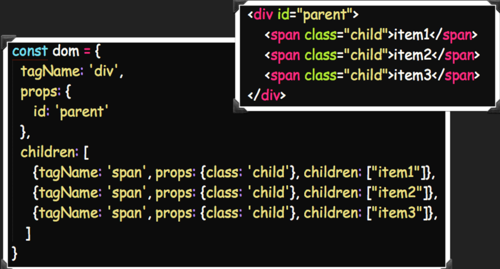 VIRTUAL-DOM->CORE/VDOM/CREATE-ELEMENT.JS 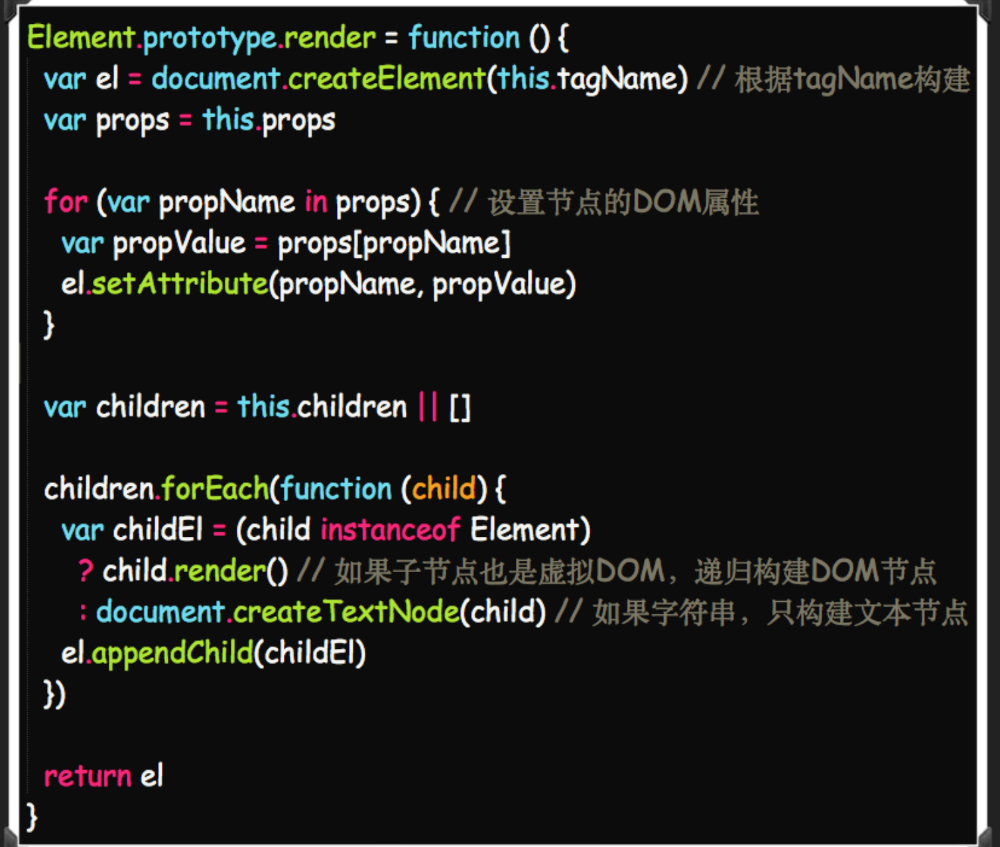
# Vue2整体解析流程
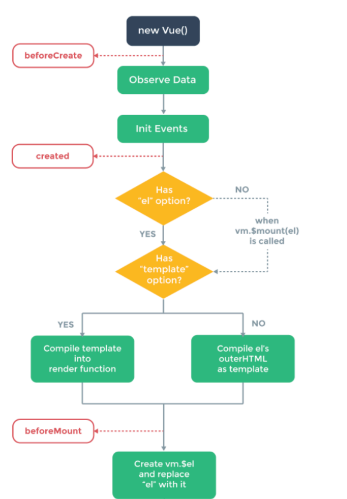 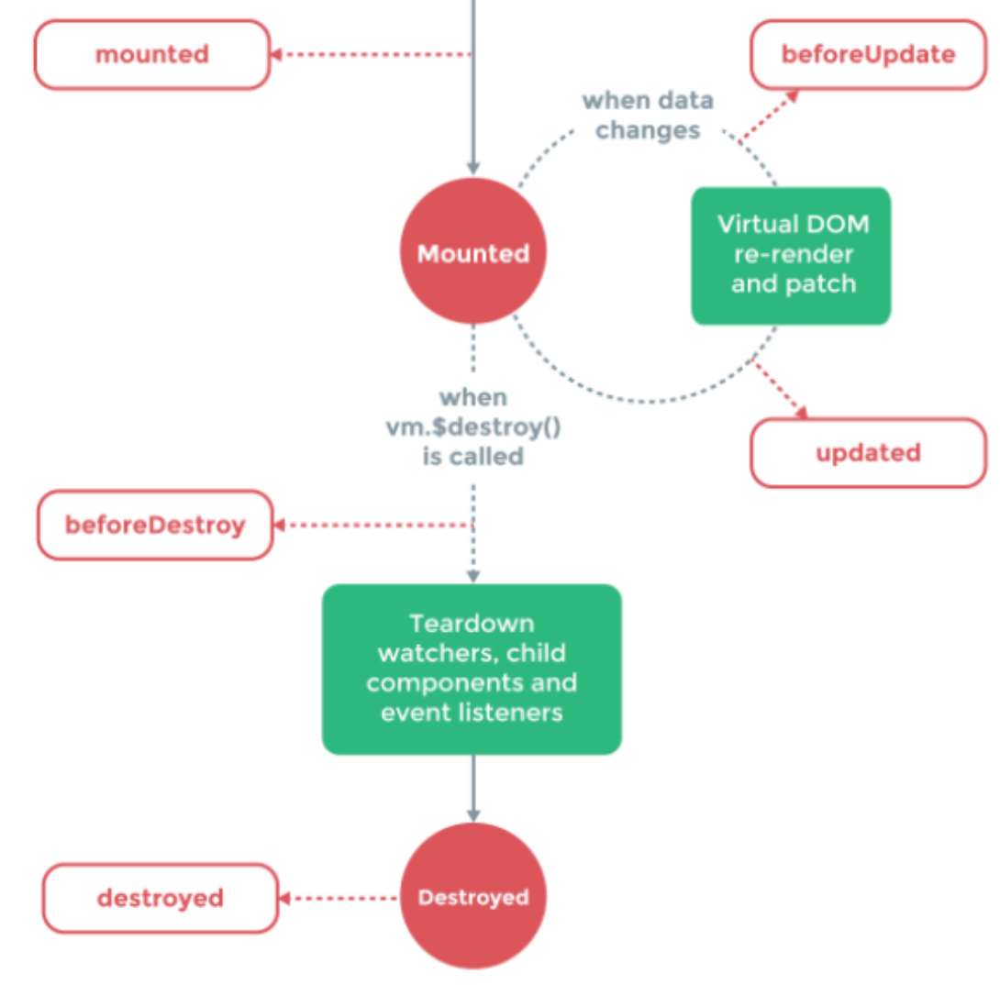 2.0 的版本中这一块有很大的改动，1.0 的版本中 Vue 使用的是 DocumentFragment 来进行模板解 析，而 2.0 中作者采用的 John Resig 的 HTML Parser 将模板解析成可直接执行的 render 函数，这是 模板预编译和服务端渲染（SSR）的前提；
# Vue运行时优化
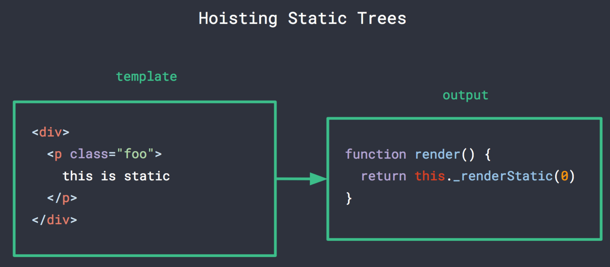 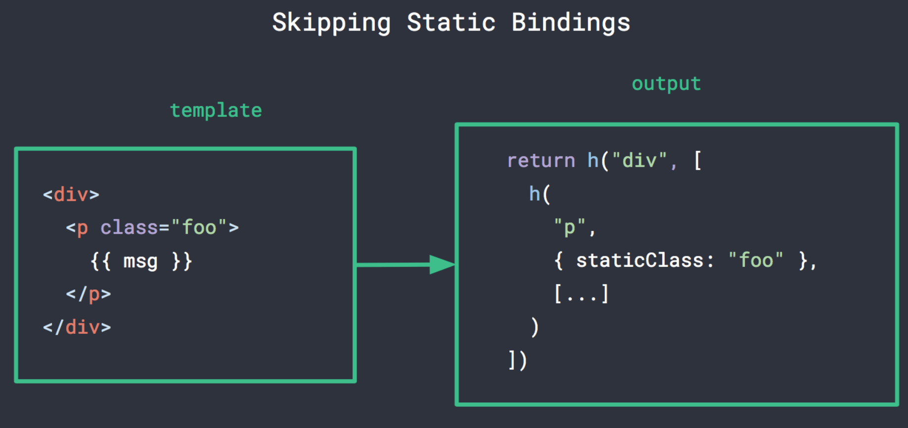
# Vue3源码
区别
1.tempalte：vue2->正则, vue3->词法分析->语法分析->AST
2.核心逻辑 object.defineproperty->proxy
提升
1.性能 模版解析的优化，组件优化，虚拟dom优化
2.tree shaking vue2打包出来 -》vue.min.js vue.runtime.min.js, vue3 -》数据响应处理，模版解析处理，端处理。
3.composition API
4.ts proxy
# 模版解析
官方模版解析地址 (opens new window)
词法分析
通过一个规范把模版分析，词法分析参考规则 (opens new window)，解析成tonken，再经过语法分析，就会形成AST
# 数据双向响应
proxy
vue3的数据双向响应用的是proxy，proxy自身有一些缺点：
1.数据挪动 多次触发。
var data=[1,2,3];
var p=new Proxy(data,{
get(target,key,receiver){
console.log('get value',key);
return Reflect.get(target,key,receiver)
},
set(target,key,value,receiver){
console.log('set value',key);
return Reflect.set(target,key,value,receiver)
}
})
2
3
4
5
6
7
8
9
10
11
2.不能拦截深层次的对象数据（vue3的处理是，对于深层次嵌套的对象，一开始没有递归，是在获取的时候判断是否是对象，再处理成为响应式数据）。
var data={
foo:{
bar:1
}
}
var p=reactive(data)
function reactive(data){
return new Proxy(data,{
get(target,key,receiver){
console.log('get value',key);
var res=Reflect.get(target,key,receiver)
if(typeof res=='object'){
return reactive(res)
}
return res
},
set(target,key,value,receiver){
console.log('set value',key);
return Reflect.set(target,key,value,receiver)
}
})
}
2
3
4
5
6
7
8
9
10
11
12
13
14
15
16
17
18
19
20
21
22
vue3 packages目录分析
- compiler-core -》编译器
- compiler-dom -》针对浏览器而言的编译器
- reactivity -》相当于vue2的observer -》数据响应系统
- runtime-core -》运行时
- runtime-dom -》专门针对于浏览器的运行时的
- server-renderer -》服务端渲染
reactivity
数据响应架构 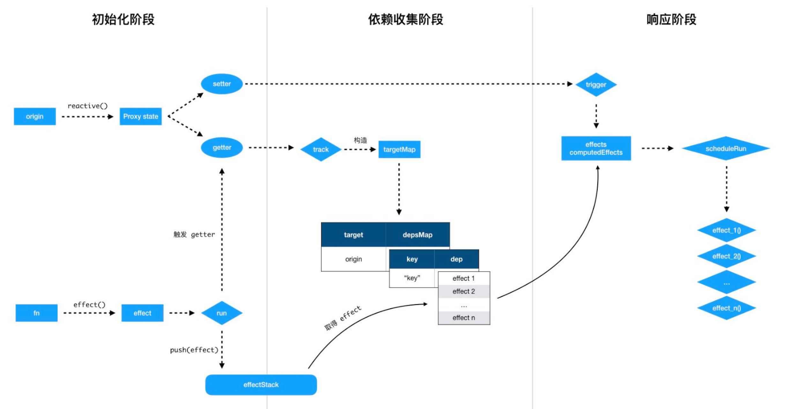
# vue3与vue2比较
vue2 options API
- beforeCreate
- created
- beforeMount
- mounted
- beforeUpdate
- updated
- beforeDestory
- destoryed
- errorCaptured
vue3 composition API
- setup()
- onBeforeMount
- onMounted
- onBeforeUpdate
- onUpdated
- onBeforeUnmount
- onUnmounted
- onErrorCaptured
vue2 basic
new Vue({
el: "#app",
template: `
<div>
<div>Count is: {{ this.count }}, double is: {{ this.double }}</div>
<button @click="increment">Add</button>
</div>
`,
data: {
count: 0,
},
computed: {
double() {
return this.count * 2;
},
},
methods: {
increment() {
this.count++;
},
},
});
//html里直接引入
<script src="./js/setup_v2.js"></script>
2
3
4
5
6
7
8
9
10
11
12
13
14
15
16
17
18
19
20
21
22
23
24
25
vue3 basic
const { reactive, computed } = Vue;
const App = {
template: `
<div>Count is: {{ state.count }}, double is: {{ state.double }}</div>
<button @click="increment">Add</button>
`,
setup() {
console.log("🐻",this);
//window
// 创建响应数据
const state = reactive({
count: 0,
double: computed(() => state.count * 2),
});
function increment() {
state.count++;
}
return {
state,
increment,
};
}
};
//html里
<script>
const { createApp } = Vue;
// 最新alpha版本中写法变了
createApp(App).mount("#app");
</script>
2
3
4
5
6
7
8
9
10
11
12
13
14
15
16
17
18
19
20
21
22
23
24
25
26
27
28
29
30
31
vue3 setup
- 1.setup是一个新的组件选项，也是其他API的入口。 也就是说，你所有的操作都将在setup函数内部定义和执行， Vue3.0也将用函数代替Vue2.x的类也就是new Vue()
- 2.setup 第一个参数是props,这里的props和Vue2.x中的props一致。
- 3.何时调用？setup是在一个组件实例被创建时，初始化了 props 之后调用， 其实就是取代了Vue2.x的careted和beforeCreate。
- 4.setup返回一个对象，对象中的属性将直接暴露给模板渲染的上下文。 而在Vue2.x中，你定义的属性都会被Vue内部无条件暴露给模板渲染上下文。
- 5.setup第二个参数(context)提供一个上下文对象，这个上下文对象提供一个可选的属性列表，和Vue2.x中挂载在this上的属性列表一致。context具有与this.$attrs，this.$slots，this.$emit，this.$parent，this.$root对应的属性（属性，插槽，emit，parent，root）。
1.props对比Vue2.x主要要注意的地方 (1)Vue2.x中props绑定在this上，我们可以通过this.props.propsName获取对应的值， Vue3.0后Props将变成setup的第一个参数,而setup也是在初始化props之后才被调用。有点像某act的感觉 (2)类型定义的时候，仍然可以像Vue2.x一样，同时也支持TS (3)props 对象是响应式的 —— 它可以被当作数据源去观测，当后续 props 发生变动时它也会被框架内部同步更新。 但对于用户代码来说，它是不可修改的（会导致警告）
vue3 rective
- vue2里没有rective，相当于date
- vue3 数据监听函数
- 1.reactive函数接收一个对象作为参数，返回这个对象的响应式代理，等价Vue2.x的Vue.observable()
- 2.对比Vue2.x的observable()，组件实例在初始化的时候会将 data 整个对象变为可观察对象， 通过递归的方式给每个 Key 使用 Object.defineProperty 加上 getter 和 settter ， 如果是数组就重写代理数组对象的七个方法。虽然给我们带来的便利，但是在大型项目上来说，性能开销就很大了。 Vue3.0之后不再将主动监听所有的数据，而是将选择权给你，实例在初始化时不需要再去递归 data 对象了， 从而降低了组件实例化的时间。
vue3 ref
ref接收一个原始值，返回一个包装对象， 包装对象具有.value属性。通过.value访问这个值。
被 ref 方法包裹后的 元素 就变成了一个代理对象。
一般而言，这里的元素参数指 基本元素 或者称之为 inner value， 如：number, string, boolean,null,undefied 等，object 一般不使用 ref，而是使用上文的 reactive。 也就是说 ref 一般适用于某个元素的；而 reactive 适用于一个对象。 ref 也就相当于把单个元素转换成一个 reactive 对象了，对象默认的键值名是：value。 ref 和 reactive区别
其实ref相当于reactive的小弟，ref背后也是通过reactive实现的，唯一的区别是ref返回的是包装对象 const count = ref(0) 等价 const count = reactive({value:0})
在setup函数中，如果通过结构返回ref和reactive,那么在模板渲染上下文中，获取不到他们的响应式变化。 因为解构他们就意味着copy了他们的引用。所以尽量不要用解构去返回一个你期望响应式的数据
vue3 computed
- 3.0中，computed 被抽成一个API，直接从vue中获取， 而Vue2.x中，computed是一个对象，在对象中定义一个个computed
vue3 watch
watch() API 提供了基于观察状态的变化来执行副作用的能力。
watch(source,cb,options?)
watch() 接收三个参数
1.第一个参数被称作 “数据源”，它可以是： 一个返回任意值的函数 一个包装对象 一个包含上述两种数据源的数组 source：可以是getter函数，值包装器或包含上述两种类型的数组（如果要查看多个源） 2.第二个参数是回调函数。回调函数只有当数据源发生变动时才会被触发： callback：是类似于Vue2 watcher处理程序的函数，带有2个参数：newVal，oldVal。 每个参数都可以是一个数组(用于观察多个源): [newVal1，newVal2，... newValN]，[oldVal1，oldVal2，... oldValN] 3.第三个可选参数options, deep 深度监听 类型: boolean default :false 和Vue2.x行为一致，都是对对象的深度监听 Lazy - 和Vue2.x immediate 正好相反 类型:Boolean, default:false